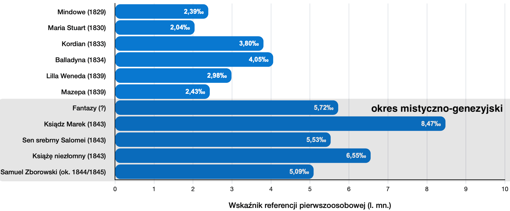
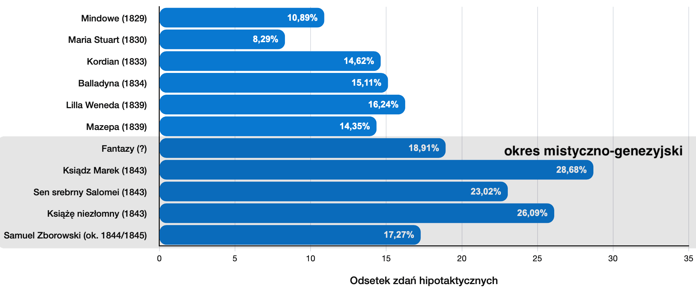
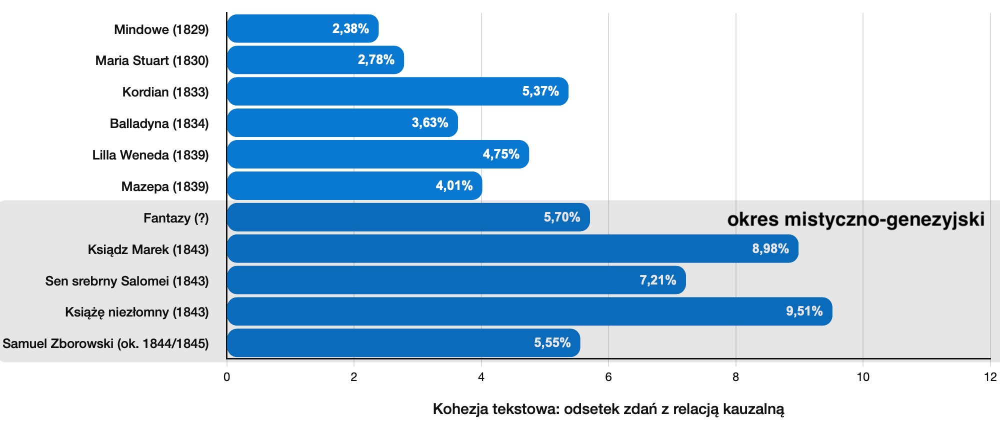

01
Rozkład metryczny wypowiedzi wybranych postaci
Porównanie dominujących metrów w wypowiedziach różnych bohaterów.


Strona umożliwia przeanalizowanie tekstu dowolnego wierszowanego dramatu (napisanego w języku polskim) pod kątem jego zróżnicowania wersyfikacyjnego oraz innych parametrów analizy cyfrowej, takich jak np.:
Porównanie dominujących metrów w wypowiedziach różnych bohaterów.
Wykładnik m.in. stopnia stabilności rytmicznej tekstu.
Stopień aktywności poszczególnych rozmówców.
Gęstość interakcji między postaciami (dynamika dialogu).
Gęstość wykrzyknień i pytań.
% wersów, które nie kończą się znakiem interpunkcyjnym sygnalizującym zamknięcie struktury składniowej.
Wystąpienia didaskaliów względem długości tekstu głównego.
Gęstość apartu jako funkcji didaskaliów.
Gęstość zaimków osobowych i dzierżawczych związanych z 1. os. l. pojedynczej i mnogiej.
Odsetek zdań hipotaktycznych (na podstawie jawnych sygnałów składniowego podporządkowania).
Średnia liczba słów (i osobno sylab) w zdaniach tekstu dialogowego.
% zdań z jawnym wykładnikiem rel. kauzalnej w wykrytych konstrukcjach hipotaktycznych.


Wielu badaczy zauważa znaczącą zmianę w sposobie pisania
Słowackiego w okresie mistyczno-genezyjskim. Jej formalnym
wykładnikiem jest na przykład ograniczenie przez poetę
„romantycznych tendencji do rozbudowywania wszelkich
metawypowiedzi (didaskaliów, prologów, wstępów)”[1]. O tej specyficznej na tle poetyki dramatu romantycznego
właściwości późnych utworów Słowackiego wspominała (za
Ireną Sławińską[2]) Ewa Nawrocka:
zwrócono uwagę na nikłość i lakoniczność uwag
inscenizacyjnych w mistycznych dramatach
Słowackiego i tendencję do ich ograniczania,
a zarazem poszerzenie tekstu głównego o informacje
dotyczące przestrzeni i czasu

Innym formalnym wykładnikiem transformacji tekstów późnego Słowackiego jest m.in. zmiana średniej długości wypowiedzi jednej postaci (ilustrująca zmianę dynamiki interakcji między postaciami):

większa frekwencja zaimków 1. os. l. mnogiej (sugerująca być może zmianę sposobu konstruowania podmiotu dramatycznego – od bardziej indywidualnego „ja” ku podmiotowi ponadindywidualnemu czy wspólnotowemu):

wzrost występowania składni hipotaktycznej (a w składni hipotaktycznej – jawnych wykładników relacji kauzalnych), co być może dowodzi przesunięcia sposobu organizowania wypowiedzi ku bardziej hierarchicznemu układowi zależności semantycznych (nasilenie dyskursywności i argumentacyjności):


a także wyraźne wyciszenie pytań i wykrzyknień (świadczące być może o przejściu od emocji i epistemologicznej niepewności do pewności – ton staje się bardziej profetyczny i płynny):


Jak działa ten algorytm?
 Skrypt przelicza liczbę sylab dla każdego wersu na
podstawie identyfikacji samogłosek, które w danej
pozycji pełnią funkcję sylabotwórczą. Nie robi tego w
100% bezbłędnie — nie wykryje np., że kombinacja [ia]
występująca na granicy morfemów (jak w wyrazie
miniaparatura) utworzy 2 sylaby (stąd całe słowo
będzie 7-sylabowe), ponieważ [i] — dość wyjątkowo jak na
język polski (bo pomimo sąsiedztwa innej samogłoski z
prawej strony) — będzie ośrodkiem osobnej sylaby. Nie
wykryje także dyftongów takich jak [au] (por.
tau-to-lo-gia, ale
na-uka) lub [oi] (por.
si-nu-soi-da, ale
He-lo-i-sa). Błędy wynikające z
takich (m.in.) wyjątków nie wpłyną znacząco na
statystyki dla długich tekstów.
Skrypt przelicza liczbę sylab dla każdego wersu na
podstawie identyfikacji samogłosek, które w danej
pozycji pełnią funkcję sylabotwórczą. Nie robi tego w
100% bezbłędnie — nie wykryje np., że kombinacja [ia]
występująca na granicy morfemów (jak w wyrazie
miniaparatura) utworzy 2 sylaby (stąd całe słowo
będzie 7-sylabowe), ponieważ [i] — dość wyjątkowo jak na
język polski (bo pomimo sąsiedztwa innej samogłoski z
prawej strony) — będzie ośrodkiem osobnej sylaby. Nie
wykryje także dyftongów takich jak [au] (por.
tau-to-lo-gia, ale
na-uka) lub [oi] (por.
si-nu-soi-da, ale
He-lo-i-sa). Błędy wynikające z
takich (m.in.) wyjątków nie wpłyną znacząco na
statystyki dla długich tekstów.
Dostępne są 3 sposoby wprowadzenia tekstu:
Poniżej znajduje się biblioteka dramatów przygotowanych pod wymagania skryptu (docelowo teksty zostaną dostosowane także do standardu TEI/XML). Dorzucono tu m.in. te utwory, które nie zostały opracowane przez serwis Wolne Lektury (jak np. Samuel Zborowski J. Słowackiego).
Nie znaleziono dramatów pasujących do wpisanej frazy.
⇄ Przewijaj w poziomie, aby zobaczyć więcej pozycji

Przegląd wskaźników analizy cyfrowej dramatu.
| Nr wersu | Treść wersu | Lb. sylab | Bohater | Wers współdziel. |
|---|
Wybierz dowolną liczbę tekstów z biblioteki i/lub dodaj własne pliki .txt. Następnie ustaw kolejność pozycji na wykresie i wskaż jeden parametr do porównania.
Utwory Juliusza Słowackiego widoczne na wykresach z opisanego wyżej studium przypadku są zaznaczone domyślnie.
Możesz dodać wiele plików jednocześnie. Każdy z nich pojawi się na wspólnej liście kolejności poniżej.
Przeciągaj pozycje za uchwyt ⋮⋮ albo użyj strzałek. Kolejność tej listy jest dokładnie kolejnością słupków na wykresie. Nazwę, która będzie widoczna na wykresie, możesz edytować.